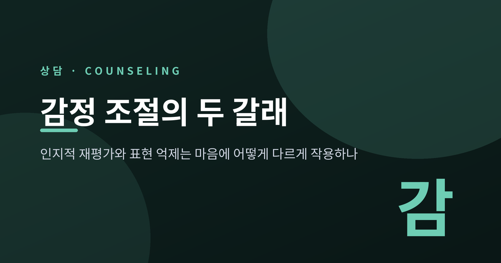
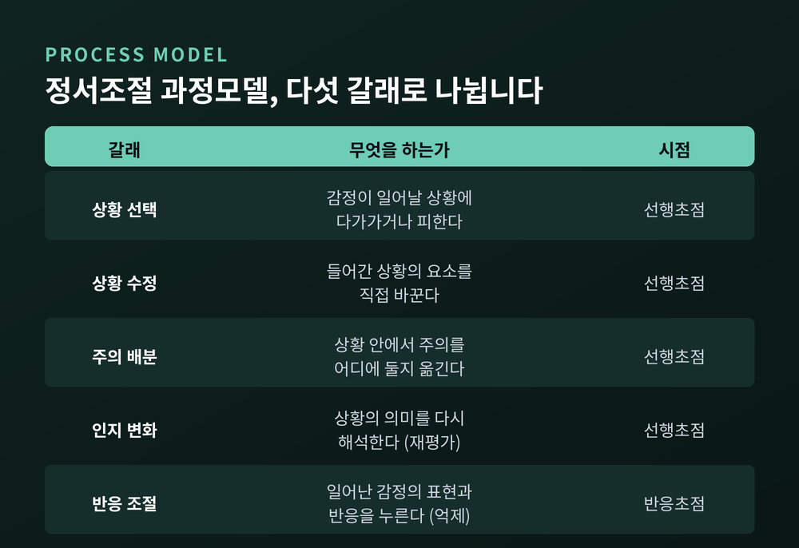
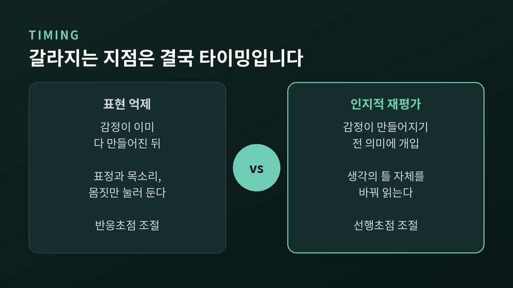
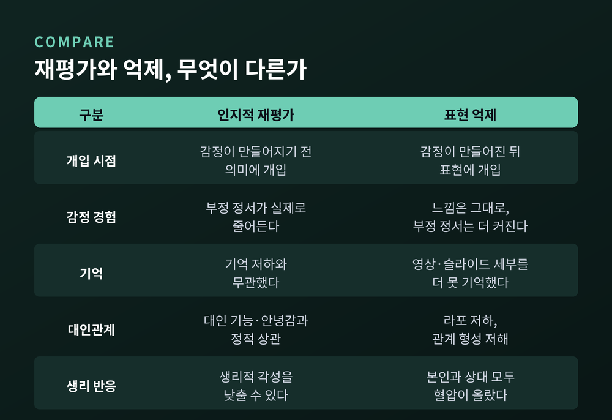
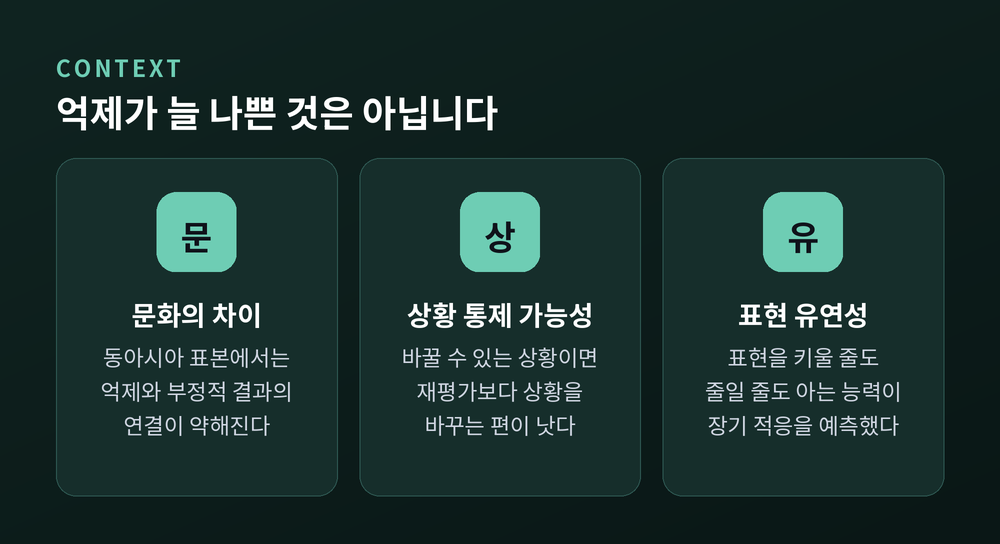
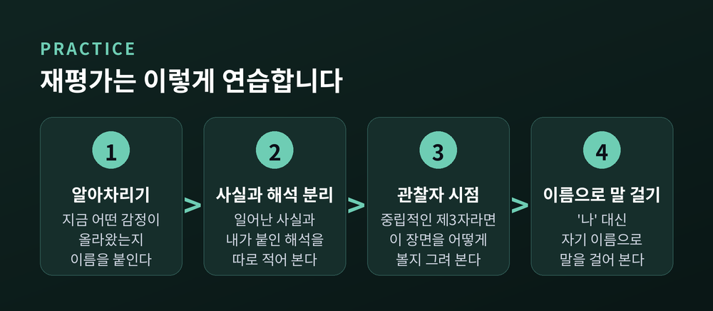

이번 글에서는 감정 조절의 두 방식인 인지적 재평가와 표현 억제를 정리해 보겠습니다. 같은 감정을 다루는 방법인데도 마음에 남기는 흔적은 꽤 다릅니다. 스탠퍼드대 제임스 그로스(James J. Gross)의 정서조절 과정모델을 축으로 그 차이를 따라가 보려 합니다.
세 줄 요약
그로스의 정서조절 과정모델은 조절 전략을 다섯 가족으로 나눕니다. 기준은 하나입니다. 감정이 만들어지는 과정의 어느 시점에 끼어드는가.
앞의 네 가지는 감정이 완성되기 전에 작동하는 선행초점 조절입니다. 마지막 하나만 감정이 다 만들어진 뒤에 작동하는 반응초점 조절입니다.
그로스는 2015년 이 모델을 확장했습니다. 조절이 확인–선택–실행이라는 세 단계의 순환으로 이루어진다고 본 것입니다. 감정을 알아차리고 조절이 필요한지 판단하는 단계, 쓸 수 있는 전략 가운데 무엇이 지금 맥락에 맞는지 고르는 단계, 고른 전략을 실제 전술로 수행하는 단계입니다.

인지적 재평가는 자극을 대하는 생각의 틀을 바꿉니다. 발표 전에 올라오는 떨림을 '망칠 신호'가 아니라 '몸이 준비되는 신호'로 바꿔 읽는 식입니다. 감정이 완성되기 전에 재료를 바꾸는 셈입니다.
표현 억제는 다릅니다. 감정은 이미 다 일어났습니다. 그 상태에서 표정과 목소리, 몸짓만 눌러 둡니다. 회의에서 불편한 말을 들었지만 표정을 굳히지 않고 넘어가는 장면을 떠올리면 가깝습니다.
겉에서 보면 둘 다 '평온해 보이는 사람'입니다. 안에서 벌어지는 일은 같지 않습니다.

첫째, 감정 경험입니다. 유도된 재평가는 부정 정서를 실제로 줄이고 생리적 각성까지 낮출 수 있습니다. 반면 표현 억제는 주관적인 느낌 자체는 거의 줄이지 못하고, 오히려 부정적 생리 반응을 키우거나 긍정 정서를 약화시키는 것으로 보고됩니다. 그로스와 존이 2003년 『Journal of Personality and Social Psychology』에 발표한 개인차 연구에서도 결이 같았습니다. 재평가를 자주 쓰는 사람은 긍정 정서를 더 많이 경험하고 부정 정서는 덜 겪었습니다. 억제를 자주 쓰는 사람은 긍정 정서를 덜 느끼면서 부정 정서는 오히려 더 많이 느꼈습니다.
둘째, 기억입니다. 리처즈와 그로스의 2000년 연구는 세 개의 실험으로 구성됐습니다. 영상을 보며 표현을 억제한 집단은 영상의 세부 내용을 더 못 기억했습니다. 슬라이드를 보며 억제와 재평가를 함께 조작한 실험에서는 억제만 기억을 떨어뜨렸고 재평가는 그렇지 않았습니다. 습관적으로 억제를 쓰는 사람은 자기보고 기억과 객관적 기억 양쪽에서 모두 저조했습니다. 연구자들의 설명은 간결합니다. 억제는 끊임없는 자기 감시와 자기 교정을 요구하고, 그만큼 작업기억이 줄어든다는 것입니다.
셋째, 대인관계입니다. 버틀러 연구진이 2003년 『Emotion』에 실은 연구에서는 서로 모르는 두 사람이 짝을 이뤄 불쾌한 주제로 대화했습니다. 한 명은 표현을 억제하도록, 다른 조건에서는 자연스럽게 반응하거나 재평가하도록 배정됐습니다. 결과는 분명했습니다. 억제 조건에서만 의사소통이 흐트러졌고, 억제한 사람의 대화 상대 혈압 반응이 커졌습니다. 두 번째 연구에서는 조절한 사람과 상대 양쪽 모두의 혈압이 올랐고, 라포가 떨어졌으며 관계 형성 자체가 저해됐습니다. 상대는 덜 가깝다고 느꼈고 친구가 되고 싶은 마음도 줄었다고 보고했습니다.
넷째, 생리 반응입니다. 억제는 주관적 괴로움을 낮추지 못한 채 몸의 부담만 늘리는 쪽으로 작동하는 경우가 많습니다. "표정은 조용해졌지만 몸은 계속 싸우고 있는 상태"에 가깝습니다.

재평가의 신경 상관은 비교적 일관되게 보고됩니다. 외측과 내측 전전두엽의 활성이 올라가고 편도체 활성은 내려갑니다. 전전두엽과 편도체 사이에 음의 기능적 연결이 관찰되는데, 전전두엽이 편도체를 하향식으로 조절하는 것으로 해석됩니다.
2014년 『Cerebral Cortex』에 실린 신경영상 메타분석의 결론도 같은 방향입니다. 재평가는 인지 통제 영역과 외측 측두피질을 일관되게 활성화하고 양측 편도체 활동을 낮췄습니다. 연구진의 해석은 이렇습니다. 재평가는 인지 통제를 써서 자극의 의미 표상을 바꾸고, 바뀐 표상이 다시 편도체를 누그러뜨린다는 것입니다.
감정을 억지로 누르는 것이 아니라, 감정을 만들어 내던 해석을 바꾸는 일이라고 이해하시면 좋겠습니다.
여기서 결론을 서두르면 곤란합니다.
문화가 변수입니다. 표현 억제는 동아시아 문화권에서 더 자주 쓰이고, 서구 표본에 비해 부정적 정신건강 결과와의 연결이 약해집니다. 억제 사용은 집단주의 문화 가치와도 연관됩니다. 일본 표본을 다룬 연구에서는 자기보고 억제 수준과 정신건강 사이에 오히려 견고한 정적 연관이 보고되기도 했습니다. 아시아적 가치를 더 많이 지닌 사람이 억제를 쓸 때는 사회적 친밀감이나 지지가 줄어드는 부작용도 완화되는 것으로 나타났습니다.
다만 '집단주의면 억제가 무해하다'는 단순한 도식은 성립하지 않습니다. 긍정 정서의 억제는 멕시코계 미국인에게는 안녕감 저하와 연관됐지만 중국계 미국인에게는 그렇지 않았습니다. 집단주의 정도가 비슷해도 감정에 관한 규범은 집단마다 다릅니다.
상황 적합성도 변수입니다. 트로이와 샬크로스, 마우스가 2013년 『Psychological Science』에 발표한 연구는 참가자 170명을 대상으로 재평가 능력과 스트레스원의 통제 가능성, 우울 수준을 함께 살폈습니다. 재평가 능력이 높은 사람은 통제할 수 없는 스트레스에 놓였을 때 우울 증상이 더 적었습니다. 그런데 통제할 수 있는 스트레스에 놓였을 때는 우울 증상이 더 많았습니다. 바꿀 수 있는 상황이라면 의미를 고쳐 읽는 대신 상황 자체를 바꾸는 편이 낫다는 뜻입니다.
억제 자체가 병은 아닙니다. 보나노와 버튼이 말하는 표현 유연성은 상황 요구에 맞춰 표현을 키울 수도, 줄일 수도 있는 능력입니다. 동료가 발표에서 민망한 실수를 했을 때 웃음을 참는 일도 여기 속합니다. 보나노 연구진의 조사에서 증폭 능력과 억제 능력은 각각 독립적으로 9·11 이후의 장기 적응을 더 좋게 예측했고, 두 능력의 합인 표현 유연성은 장기적 고통 감소를 예측했습니다.
문제는 억제라는 도구가 아니라, 그것 하나만 쥐고 있는 경직성입니다.

재평가에는 크게 두 가지 전술이 있습니다.
재해석은 상황에 다른 이야기를 붙이는 방식입니다. 시험을 망친 일을 '실패의 표식'이 아니라 '배움의 기회'로 바꿔 읽는 것, 동료의 지적을 비난이 아니라 도우려는 시도로 상상해 보는 것이 여기 해당합니다.
거리두기는 바라보는 자리를 옮기는 방식입니다. 지금 이 일을 중립적인 관찰자가 본다면 어떻게 볼지 그려 봅니다. 시간이나 장소상 멀리 떨어진 일처럼 구성해 보기도 합니다. 재해석이 내용을 바꾼다면, 거리두기는 시점을 바꿉니다.
훈련 효과도 확인됐습니다. 종단 훈련 연구에서 두 전술 모두 시간이 지나며 자기보고 부정 정서를 줄였습니다. 흥미로운 대목은 그다음입니다. 거리두기 훈련 집단만 조절 지시가 없는 기저선 시행에서도 부정 정서가 줄었고, 그 감소폭은 무조절 통제집단을 넘어섰습니다. 훈련이 자동적인 습관으로 옮겨 갈 가능성을 보여 주는 결과입니다.
언어를 바꾸는 방법도 있습니다. 마음속에서 자신을 '나' 대신 자기 이름이나 2인칭으로 부르는 거리두기 자기대화입니다. 3인칭 언어가 만드는 언어적 거리가 인지적 거리를 촉발하고, 이것이 추상적 처리를 활성화해 정서 관련 뇌 영역의 활성 강도를 낮춘다고 설명됩니다. ERP와 fMRI 증거가 함께 가리키는 결론은 이렇습니다. 3인칭 자기대화는 인지 통제 자원을 크게 쓰지 않으면서 정서 조절을 돕습니다. 억제와 달리 힘이 덜 드는 조절인 셈입니다.
불안 앞에서는 방향을 바꿔 보는 방법도 있습니다. 브룩스가 2014년 『Journal of Experimental Psychology: General』에 발표한 연구에서는 노래 부르기와 공개 연설, 수학 과제 상황을 다뤘습니다. 진정하려 애쓴 사람들보다, 불안한 각성을 '흥분'으로 재평가한 사람들이 더 흥분을 느꼈고 수행도 좋았습니다. 방법은 단순했습니다. "나는 신난다"고 소리 내어 말하는 정도였습니다. 위협의 틀 대신 기회의 틀을 잡은 것입니다.

정리해 두면 간단해 보이지만, 감정이 정점에 올라 있을 때는 재평가가 잘 작동하지 않습니다. 이미 압도된 상태에서는 의미를 바꿔 읽을 인지 여력 자체가 남아 있지 않기 때문입니다. 그럴 때는 상황 선택이나 상황 수정처럼 앞쪽 단계로 물러나는 편이 현실적입니다. 자리를 잠시 뜨거나, 대화의 조건을 바꾸는 것이 그렇습니다.
측정 도구인 정서조절 질문지(ERQ)가 재평가 6문항, 억제 4문항으로 이루어져 있다는 점도 기억해 둘 만합니다. 여러 연구에서 억제 사용에는 성별 차이가 나타났지만 재평가에는 유의한 차이가 없었습니다. 다만 이런 수치는 특정 표본의 결과이며, 한국인 규준으로 그대로 옮겨 읽기는 어렵습니다.
예전에는 감정을 잘 다스리는 사람이란 표정이 흔들리지 않는 사람이라고 여겼습니다. 지금은 다르게 봅니다. 상황에 맞는 도구를 골라 쓸 줄 아는 사람에 가깝습니다.
정리하면 이렇습니다.
재평가는 감정이 만들어지기 전에 의미를 바꾸고, 억제는 만들어진 감정의 겉을 누릅니다. 억제는 느낌을 줄여 주지 않으면서 기억과 관계, 몸에 값을 치르게 하는 경우가 많습니다. 그렇다고 억제가 죄는 아닙니다. 문화가 다르고 상황이 다르면 셈법도 달라집니다.
중요한 것은 어느 하나를 버리는 일이 아니라, 지금 이 순간에 맞는 쪽을 고를 수 있는가입니다.
이 글은 일반적인 심리학 연구를 정리한 정보이며, 진단이나 치료를 위한 조언이 아닙니다. 감정 조절의 어려움이 오래 이어지거나 일상과 관계에 지장을 준다면, 전문 상담기관이나 정신건강의학과 등 전문가와 상담해 보시길 권합니다. 혼자 버티는 것보다 훨씬 빠른 길일 때가 많습니다.
감정을 잘 다루는 사람이 되고 싶으냐고 물으신다면, 저는 감정을 두고 선택지를 여럿 가진 사람이 되고 싶다고 답하겠습니다.